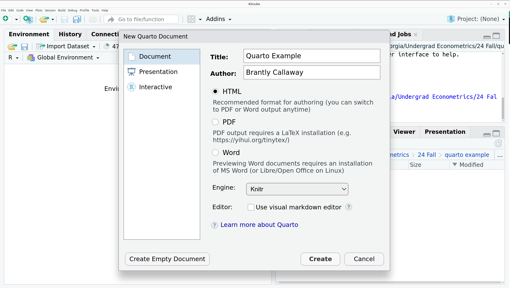
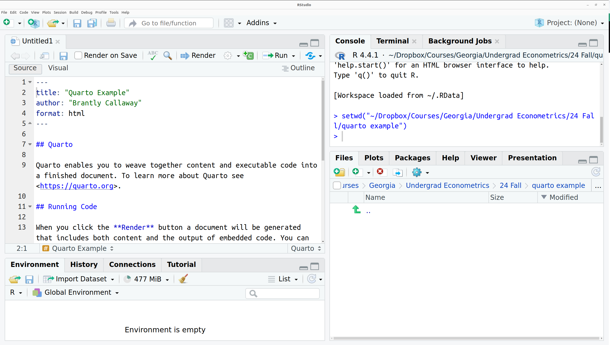

log(5)[1] 1.609438\[ \newcommand{\E}{\mathbb{E}} \renewcommand{\P}{\textrm{P}} \let\L\relax \newcommand{\L}{\textrm{L}} %doesn't work in .qmd, place this command at start of qmd file to use it \newcommand{\F}{\textrm{F}} \newcommand{\var}{\textrm{var}} \newcommand{\cov}{\textrm{cov}} \newcommand{\corr}{\textrm{corr}} \newcommand{\Var}{\mathrm{Var}} \newcommand{\Cov}{\mathrm{Cov}} \newcommand{\Corr}{\mathrm{Corr}} \newcommand{\sd}{\mathrm{sd}} \newcommand{\se}{\mathrm{s.e.}} \newcommand{\T}{T} \newcommand{\indicator}[1]{\mathbb{1}\{#1\}} \newcommand\independent{\perp \!\!\! \perp} \newcommand{\N}{\mathcal{N}} \]
Related Reading: IDS 2.2
R has a large number of helpful, built-in functions. Let’s start with a pretty representative example: computing logarithms. This can be done using the R function log.
log(5)[1] 1.609438You can tell this is a function because of the parentheses. The 5 inside of the parentheses is called the argument of the function. As practice, try computing the \(\log\) of 7.
The default base in R is \(e \approx 2.718\), so that log(5) actually computes what you might be more used to calling the “natural logarithm”. You can change the default value of the base by adding an extra argument to the function.
log(5, base=10)[1] 0.69897In order to learn about what arguments are available (and what they mean), you can access the help files for a particular function by running either
help(log)
?logand, of course, substituting the name of whatever function you want to learn about in place of log.
In RStudio, it can also be helpful to press Tab and RStudio will provide possible completions to the function you are typing as well as what arguments can be provided to that function.
Practice: R has a function for computing absolute value (you’ll have to find the name of it on your own). Try computing the absolute value of \(5\) and \(-5\). Try creating a variable called negative_three that is equal to \(-3\); then, try to compute the absolute value of negative_three.
Related Reading: IDS 2.4
The most basic data type in R is the vector. In fact, above when we created variables that were just a single number, they are actually stored as a numeric vector.
To more explicitly create a vector, you can use the c function in R. For example, let’s create a vector called five that contains the numbers 1 through 5.
five <- c(1,2,3,4,5)We can print the contents of the vector five just by typing its name
five[1] 1 2 3 4 5Another common operation on vectors is to get a particular element of a vector. Let me give an example
five[3][1] 3This code takes the vector five and returns the third element in the vector. Notice that the above line contains braces, [ and ] rather than parentheses.
If you want several different elements from a vector, you can do the following
five[c(1,4)][1] 1 4This code takes the vector five and returns the first and fourth element in the vector.
One more useful function for vectors is the function length. This tells you the number of elements in vector. For example,
length(five)[1] 5which means that there are five total elements in the vector five.
Related Reading: IDS 2.8
The main operations on numeric vectors are +, -, *, / which correspond to addition, subtraction, multiplication, and division. Often, we would like to carry out these operations on vectors.
There are two main cases. The first case is when you try to add a single number (i.e., a scalar) to all the elements in a vector. In this setup, the operation will happen element-wise which means the same number will be added to all numbers in the vector. This will be clear with some examples.
five <- c(1,2,3,4,5)
# adds one to each element in vector
five + 1[1] 2 3 4 5 6# also adds one to each element in vector
1 + five[1] 2 3 4 5 6Similar things will happen with the other mathematical operations above. Here are some more examples:
five * 3[1] 3 6 9 12 15five - 3[1] -2 -1 0 1 2five / 3[1] 0.3333333 0.6666667 1.0000000 1.3333333 1.6666667The other interesting case is what happens when you try to apply any of the same mathematical operators to two different vectors.
# just some random numbers
vec2 <- c(8,-3,4,1,7)
five + vec2[1] 9 -1 7 5 12five - vec2[1] -7 5 -1 3 -2five * vec2[1] 8 -6 12 4 35five / vec2[1] 0.1250000 -0.6666667 0.7500000 4.0000000 0.7142857You can immediately see what happens here. For example, for five + vec2, the first element of five is added to the first element of vec2, the second element of five is added to the second element of vec2 and so on. Similar things happen for each of the other mathematical operations too.
There’s one other case that might be interesting to consider too. What happens if you try to apply these mathematical operations to two vectors of different lengths? Let’s find out
vec3 <- c(2,6)
five + vec3Warning in five + vec3: longer object length is not a multiple of shorter
object length[1] 3 8 5 10 7You’ll notice that this computes something but it also issues a warning. What happens here is that the result is equal to the first element of five plus the first element of vec3, the second of five plus the second element of vec3, the third element of five plus the first element of vec3, the fourth element of five plus the second element of vec3, and the fifth element of five plus the first element of vec3. What’s happening here is that, since vec3 contains fewere elements that five, the elements of vec3 are getting recycled. In my experience, this warning often indicates a coding mistake. There are many cases where I want to add the same number to all elements in a vector, and many other cases where I want to add two vectors that have the same length, but I cannot think of any cases where I would want to add two vectors the way that is being carried out here.
The same sort of things will happen with subtraction, multiplication, and division (feel free to try it out).
This is definitely an incomplete list, but I’ll point you here to some more functions in R that are often helpful along with quick examples of them.
seq function — creates a “sequence” of numbers
seq(2,7)[1] 2 3 4 5 6 7sum function — computes the sum of a vector of numbers
sum(c(1,5,8))[1] 14sort, order, and rev functions — functions for understanding the order or changing the order of a vector
sort(c(3,1,5))[1] 1 3 5order(c(3,1,5))[1] 2 1 3rev(c(3,1,5))[1] 5 1 3%% — modulo function (i.e., returns the remainder from dividing one number by another)
8 %% 3[1] 21 %% 3[1] 1Practice: The function seq contains an optional argument length.out. Try running the following code and seeing if you can figure out what length.out does.
seq(1,10,length.out=5)
seq(1,10,length.out=10)
seq(1.10,length.out=20)There are other types of vectors in R too. Probably the main two other types of vectors are character vectors and logical vectors. We’ll talk about character vectors here and defer logical vectors until later. Character vectors are often referred to as strings.
We can create a character vector as follows
string1 <- "econometrics"
string2 <- "class"
string1[1] "econometrics"The above code creates two character vectors and then prints the first one.
Side Comment c stands for “concatenate”. Concatenate is a computer science word that means to combine two vectors. Probably the most well known version of this is “string concatenation” that combines two vectors of characters. Here is an example of string concatenation.
c(string1, string2)[1] "econometrics" "class" Sometimes string concatenation means to put two (or more strings) into the same string. This can be done using the paste command in R.
paste(string1, string2)[1] "econometrics class"Notice that paste puts in a space between string1 and string2. For practice, see if you can find an argument to the paste function that allows you to remove the space between the two strings.
Another very important type of object in R is the data frame. I think it is helpful to think of a data frame as being very similar to an Excel spreadsheet — sort of like a matrix or a two-dimensional array. Each row typically corresponds to a particular observation, and each column typically provides the value of a particular variable for that observation.
Just to give a simple example, suppose that we had firm-level data about the name of the firm, what industry a firm was in, what county they were located in, and their number of employees. I created a data frame like this (it is totally made up, BTW) and show it to you next
firm_data| name | industry | county | employees |
|---|---|---|---|
| ABC Manufacturing | Manufacturing | Clarke | 531 |
| Martin’s Muffins | Food Services | Oconee | 6 |
| Down Home Appliances | Manufacturing | Clarke | 15 |
| Classic City Widgets | Manufacturing | Clarke | 211 |
| Watkinsville Diner | Food Services | Oconee | 25 |
Side Comment: If you are following along on R, I created this data frame using the following code
firm_data <- data.frame(name=c("ABC Manufacturing", "Martin\'s Muffins", "Down Home Appliances", "Classic City Widgets", "Watkinsville Diner"),
industry=c("Manufacturing", "Food Services", "Manufacturing", "Manufacturing", "Food Services"),
county=c("Clarke", "Oconee", "Clarke", "Clarke", "Oconee"),
employees=c(531, 6, 15, 211, 25))This is also the same data that we loaded earlier in Section 2.3.
Often, we’ll like to access a particular column in a data frame. For example, you might want to calculate the average number of employees across all the firms in our data.
Typically, the easiest way to do this, is to use the accessor symbol, which is $ in R. This will make more sense with an example:
firm_data$employees[1] 531 6 15 211 25firm_data$employees just provides the column called “employees” in the data frame called “firm_data”. You can also notice that firm_data$employees is just a numeric vector. This means that you can apply any of the functions that we have been covering on it
mean(firm_data$employees)[1] 157.6log(firm_data$employees)[1] 6.274762 1.791759 2.708050 5.351858 3.218876Side Comment: Notice that the function mean and log behave differently. mean calculates the average over all the elements in the vector firm_data$employees and therefore returns a single number. log calculates the logarithm of each element in the vector firm_data$employees and therefore returns a numeric vector with five elements.
Side Comment:
The $ is not the only way to access the elements in a data frame. You can also access them by their position. For example, if you want whatever is in the third row and second column of the data frame, you can get it by
firm_data[3,2][1] "Manufacturing"Sometimes it is also convenient to recover a particular row or column by its position in the data frame. Here is an example of recovering the entire fourth row
firm_data[4,] name industry county employees
4 Classic City Widgets Manufacturing Clarke 211Notice that you just leave the “column index” (which is the second one) blank
Side Comment: One other thing that sometimes takes some getting used to is that, for programming in general, you have to be very precise. Suppose you were to make a very small typo. R is not going to understand what you mean. See if you can spot the typo in the next line of code.
firm_data$employesNULLA few more useful functions for working with data frames are:
nrow and ncol — returns the number of rows or columns in the data frame
colnames and rownames — returns the names of the columns or rows
Vectors and data frames are the main two types of objects that we’ll use this semester, but let me give you a quick overview of a few other types of objects. Let’s start with lists. Lists are very generic in the sense that they can carry around complicated data. If you are familiar with any object oriented programming language like Java or C++, they have the flavor of an “object”, in the object-oriented sense.
I’m not sure if we will see any examples this semester where you have to use a list. But here is an example. Suppose that we wanted to put the vector that we created earlier five and the data frame that we created earlier firm_data into the same object. We could do it as follows
unusual_list <- list(numbers=five, df=firm_data)You can access the elements of a list in a few different ways. Sometimes it is convenient to access them via the $
unusual_list$numbers[1] 1 2 3 4 5Other times, it is convenient to access them via their position in the list
unusual_list[[2]] # notice the double brackets name industry county employees
1 ABC Manufacturing Manufacturing Clarke 531
2 Martin's Muffins Food Services Oconee 6
3 Down Home Appliances Manufacturing Clarke 15
4 Classic City Widgets Manufacturing Clarke 211
5 Watkinsville Diner Food Services Oconee 25Matrices are very similar to data frames, but the data should all be of the same type. Matrices are very useful in some numerical calculations that are beyond the scope of this class. Here is an example of a matrix.
mat <- matrix(c(1,2,3,4), nrow=2, byrow=TRUE)
mat [,1] [,2]
[1,] 1 2
[2,] 3 4You can access elements of a matrix by their position in the matrix, just like for the data frame above.
# first row, second column
mat[1,2][1] 2# all rows in second column
mat[,2] [1] 2 4Sometimes variables in economics are categorical. This sort of variable is somewhat between a numeric variable and a string. In R, categorical variables are called factors.
A good example of a categorical variable is firm_data$industry. It tells you the “category” of the industry that a firm is in.
Oftentimes, we may have to tell R that a variable is a “factor” rather than just a string. Let’s create a variable called industry that contains the industry from firm_data but as a factor.
industry <- as.factor(firm_data$industry)
industry[1] Manufacturing Food Services Manufacturing Manufacturing Food Services
Levels: Food Services ManufacturingA useful package for working with factor variables is the forcats package.
Sometimes you may be in the case where there is a variable where you don’t know what exactly it contains. Some functions that are helpful in this case are
class — tells you, err, the class of an object (i.e., its “type”)
head — shows you the “beginning” of an object; this is especially helpful for large objects (like some data frames)
str — stands for “structure” of an object
Let’s try these out
class(firm_data)[1] "data.frame"# typically would show the first five rows of a data frame,
# but that is the whole data frame here
head(firm_data) name industry county employees
1 ABC Manufacturing Manufacturing Clarke 531
2 Martin's Muffins Food Services Oconee 6
3 Down Home Appliances Manufacturing Clarke 15
4 Classic City Widgets Manufacturing Clarke 211
5 Watkinsville Diner Food Services Oconee 25str(firm_data)'data.frame': 5 obs. of 4 variables:
$ name : chr "ABC Manufacturing" "Martin's Muffins" "Down Home Appliances" "Classic City Widgets" ...
$ industry : chr "Manufacturing" "Food Services" "Manufacturing" "Manufacturing" ...
$ county : chr "Clarke" "Oconee" "Clarke" "Clarke" ...
$ employees: num 531 6 15 211 25Practice: Try running class, head, and str on the vector five that we created earlier.
Related Reading: IDS 2.9
All programming languages have ways of tracking whether variables meet certain criteria. These are often called Booleans or Logicals. For us, this will particularly come up in the context of subsetting data (i.e., selecting data based on some condition) and in running particular portions of code based on some condition.
Some main logical operators are ==, <=, >=, <, > corresponding to whether or not two things are equal, less than or equal to, greater than or equal, strictly less than, and strictly greater than. These can be applied to vectors. And the comparisons result in either TRUE or FALSE. Here are some examples
five <- c(1,2,3,4,5)
# only 3 is equal to 3
five == 3[1] FALSE FALSE TRUE FALSE FALSE# 1,2,3 are all less than or equal to 3
five <= 3[1] TRUE TRUE TRUE FALSE FALSE# 3,4,5, are all greater than or equal to 3
five >= 3[1] FALSE FALSE TRUE TRUE TRUE# 1,2 are strictly less than 3
five < 3[1] TRUE TRUE FALSE FALSE FALSE# 4,5 are strictly greater than 3
five > 3[1] FALSE FALSE FALSE TRUE TRUEExample: Often, we might be interested in learning about a subset of our data. As a simple example, using our firm_data from earlier, you could imagine being interested in average employment for manufacturing firms.
We can do this using the subset function along with the logical operations we’ve learned in this section.
manufacturing_firms <- subset(firm_data, industry=="Manufacturing")
mean(manufacturing_firms$employees)[1] 252.3333As practice, try creating a subset of firm_data based on firms having more than 100 employees.
Related Reading: IDS 2.9
There are a number of additional logical operators that can be useful in practice. Here, we quickly cover several more.
!= — not equal
c(1,2,3) != 3[1] TRUE TRUE FALSEWe can link together multiple logical comparisons. If we want to check whether multiple conditions hold, we can use “logical AND” &; if we want to check whether any of multiple conditions hold, we can use “logical OR” |.
# AND
( c(1,2,3,4,5) >= 3 ) & ( c(1,2,3,4,5) < 5 )[1] FALSE FALSE TRUE TRUE FALSE# OR
( c(1,2,3,4,5) >= 4 ) | ( c(1,2,3,4,5) < 2 )[1] TRUE FALSE FALSE TRUE TRUE%in% — checks whether the elements of one vector show up in another vector
# 1 is in the 2nd vector, but 7 is not
c(1,7) %in% c(1,2,3,4,5)[1] TRUE FALSEOften it is useful to check whether any logical conditions are true or all logical conditions are true. This can be done as follows
# this one is TRUE because 1 is in the 2nd vector
any(c(1,7) %in% c(1,2,3,4,5))[1] TRUE# this one is FALSE because 7 is not in the 2nd vector
all(c(1,7) %in% c(1,2,3,4,5))[1] FALSERelated Reading: IDS 3.2
It is often helpful to write your own functions in R. If you ever find yourself repeating the same code over and over, this suggests that you should write this code as a function and repeatedly call the function.
Suppose we are interesting in solving the quadratic equation \[ ax^2 + bx + c = 0 \] If you remember the quadratic formula, the solution to this equation is \[ x = \frac{-b \pm \sqrt{b^2-4ac}}{2a} \] It would be tedious to calculate this by hand (especially if we wanted to calculate it for many different values of \(a\), \(b\), and \(c\)), so let’s write a function to do it.
quadratic_solver <- function(a, b, c) {
root1 <- ( -b + sqrt(b^2 - 4*a*c) ) / 2*a
root1
}Before we try this out, let’s notice a few things. First, while this particular function is for solving the quadratic equation, this is quite representative of what a function looks like in R.
quadratic_solver — This is the name of the function. It’s good to give your function a descriptive name related to what it does. But you could call it anything you want. If you wanted to call this function uga, it would still work.
the part <- function finishes off assigning the function the name quadratic_solver and implies that we are writing down a function rather than a vector or data.frame or something else. This part will show up in all function definitions.
the part (a, b, c), a, b, and c are the names of the arguments to the function. In a minute when we call the function, we need to tell the function the particular values of a, b, and c for which to solve the quadratic equation. We could name these whatever we want, but, again, it is good to have descriptive names. When you write a different function, it can have as many arguments as you want it to have.
the part { ... } everything that the function does should go between the curly brackets
the line root1 <- ( -b + sqrt(b^2 - 4*a*c) ) / 2*a contains the main thing that is calculated by our function. Notice that we only calculate one of the “roots” (i.e., solutions to the quadratic equation) because of the \(+\) in this expression.
the line root1 R returns whatever variable is on the last line of the function. It might be somewhat more clear to write return(root1). The behavior of the code would be exactly the same, but it is just the more common “style” in R programming to not include the explicit return.
Now let’s try out our function
# solves quadratic equation for a=1, b=4, c=3
quadratic_solver(1,4,3)[1] -1# solves quadratic equation for a=-1, b=5, c=10
quadratic_solver(-1,5,10)[1] -1.531129Two last things that are worth pointing out about functions:
Functions in R can be set up to take default values for some of their arguments
Because the arguments have names, if you are explicit about the name of the argument, then the order of the argument does not matter.
To give examples, let’s write a slightly modified version of our function to solve quadratic equations.
quadratic_solver2 <- function(a=1, b, c) {
root1 <- ( -b + sqrt(b^2 - 4*a*c) ) / 2*a
root1
}The only thing different here is that a takes the default value of 1. Now let’s try some different calls to quadratic_solver and quadratic_solver2
# solve again for a=1,b=4,c=3
quadratic_solver2(b=4,c=3)[1] -1# replace default and change order
quadratic_solver2(c=10,b=5,a=-1)[1] -1.531129# no default set for quadratic_solver so it will crash if a not provided
quadratic_solver(b=4,c=3)Error in quadratic_solver(b = 4, c = 3): argument "a" is missing, with no defaultRelated Reading: IDS 3.1
Often when writing code, you will want to do different things depending on some condition. Let’s write a function that takes in the number of employees that are in a firm and prints “large” if the firm has more than 100 employees and “small” otherwise.
large_or_small <- function(employees) {
if (employees > 100) {
print("large")
} else {
print("small")
}
}I think, at this point, this code should make sense to you. The only new thing is the if/else. The following is not code that will actually run but is just to help understand the logic of if/else.
if (condition) {
# do something
} else {
# do something else
}All that happens with if/else is that we check whether condition evaluate to TRUE or FALSE. If it is TRUE, the code will do whatever is inside the first set of brackets; if it is FALSE, the code will do whatever is in the set of brackets following else.
Related Reading: IDS 3.4
Often, we need to run the same code over and over again. A for loop is a main programming tool for this case (for loops show up in pretty much all programming languages).
We’ll have more realistic examples later on in the semester, but we’ll do something trivial for now.
out <- c()
for (i in 1:10) {
out[i] <- i*3
}
out [1] 3 6 9 12 15 18 21 24 27 30The above code, starts with \(i=1\), calculates \(i*3\) (which is 3), and then stores that result in the first element of the vector out, then \(i\) increases to 2, the code calculates \(i*3\) (which is now 6), and stores this result in the second element of out, and so on through \(i=10\).
Related Reading: IDS 3.5
Vectorizing functions is a relatively advanced topic in R programming, but it is an important one, so I am including it here.
Because we will often be working with data, we will often be performing the same operation on all of the observations in the data. For example, suppose that you wanted to take the logarithm of the number of employees for all the firms in firm_data. One way to do this is to use a for loop, but this code would be a bit of a mess. Instead, the function log is vectorized — this means that if we apply it to a vector, it will calculate the logarithm of each element in the vector. Besides this, vectorized functions are often faster than for loops.
Not all functions are vectorized though. Let’s go back to our function earlier called large_or_small. This took in the number of employees at a firm and then printed “large” if the firm had more than 100 employees and “small” otherwise. Let’s see what happens if we call this function on a vector of employees (Ideally, we’d like the function to be applied to each element in the vector).
employees <- firm_data$employees
employees[1] 531 6 15 211 25large_or_small(employees)Error in if (employees > 100) {: the condition has length > 1This is not what we wanted to have happen. Instead of determining whether each firm was large or small, we get an error basically said that something may be going wrong here. What’s going on here is that the function large_or_small is not vectorized.
In order to vectorize a function, we can use one of a number of “apply” functions in R. I’ll list them here
sapply — this stands for “simplify” apply; it “applies” the function to all the elements in the vector or list that you pass in and then tries to “simplify” the result
lapply — stands for “list” apply; applies a function to all elements in a vector or list and then returns a list
vapply — stands for “vector” apply; applies a function to all elements in a vector or list and then returns a vector
apply — applies a function to either the rows or columns of a matrix-like object (i.e., a matrix or a data frame) depending on the value of the argument MARGIN
Let’s use sapply to vectorize large_or_small.
large_or_small_vectorized <- function(employees_vec) {
sapply(employees_vec, FUN = large_or_small)
}All that this will do is call the function large_or_small for each element in the vector employees. Let’s see it in action
large_or_small_vectorized(employees)[1] "large"
[1] "small"
[1] "small"
[1] "large"
[1] "small"[1] "large" "small" "small" "large" "small"This is what we were hoping for.
Side Comment: I also typically replace most all for loops with an apply function. In most cases, I don’t think there is much of a performance gain, but the code seems easier to read (or at least more concise).
Earlier we wrote a function to take a vector of numbers from 1 to 10 and multiply all of them by 3. Here’s how you could do this using sapply
sapply(1:10, function(i) i*3) [1] 3 6 9 12 15 18 21 24 27 30which is considerably shorter.
One last thing worth pointing out though is that multiplication is already vectorized, so you don’t actually need to do sapply or the for loop; a better way is just
(1:10)*3 [1] 3 6 9 12 15 18 21 24 27 30Side Comment: A relatively popular alternative to apply functions are map functions provided in the purrr package.
Side Comment: It’s often helpful to have a vectorized version of if/else. In R, this is available in the function ifelse. Here is an alternative way to vectorize the function large_or_small:
large_or_small_vectorized2 <- function(employees_vec) {
ifelse(employees_vec > 100, "large", "small")
}
large_or_small_vectorized2(firm_data$employees)[1] "large" "small" "small" "large" "small"Here you can see that ifelse makes every comparison in its first argument, and then returns the second element for every TRUE coming from the first argument, and returns the third element for every FALSE coming from the first argument.
ifelse also works with vectors in the second and third element. For example:
ifelse(c(1,3,5) < 4, yes=c(1,2,3), no=c(4,5,6))[1] 1 2 6which picks up 1 and 2 from the second (yes) argument and 6 from the third (no) argument.
Related Reading: IDS Ch. 20
R has very useful tools for mix code and writing to produce reports (or, for our purpose, homeworks and project).
As of this writing, the most common way to do this seems to be switching from Rmarkdown to Quarto. I am going to explain how to create a Quarto document below, but, if you are familiar with Rmarkdown, the workflow is going to be very similar.
To create a new Quaro document, click File -> New File -> Quarto Document. That will open up a menu that looks like the following

You will need to set a few options. I set the title to be Quarto Example and author to be Brantly Callaway. I also unchecked the box at the bottom that says “Use visual markdown editor” [I prefer this setting to be unchecked, but you can try it both ways and see what you like.] Now click “Create” and your screen will look something like this

When you save a Quarto file, you should save it with a .qmd extension.
Here is a quick example of how you could use Quarto to write homework solutions. Suppose the first homework of the semester asked you to write a function called sum10 that took in a vector of numbers and calculated the sum of the first 10 numbers in the vector. Then, report sum10(1:100).
---
title: "Homework 1"
author: "Brantly Callaway"
format: html
---
## Question 1
To calculate the sum of the first ten numbers in a vector,
I wrote the following function:
```{r}
sum10 <- function(x) {
# get first 10 elements of x
x10 <- x[1:10]
# calculate their sum and return it
sum(x10)
}
sum10(1:100)
```A few last comments for you:
These notes are written in Quarto, and I write homework solutions in Quarto too.
If you are interested, you can view the source for this book at http://github.com/bcallaway11/econ_4750_notes. The source code for this chapter is in the file 02-programming_in_R.qmd.
To conclude this section, I want to briefly point you towards some advanced material. We will probably brush up against some of this material this semester. That being said, R has some very advanced capabilities related to data science, data manipulation, and data visualization. If you have time/interest you might push further in all of these directions. By the end of the semester, we may not have mastered these topics, but they should at least be accessible to you.
Related Reading: IDS Chapter 4 — strongly recommend that you read this
• R has very good data cleaning / manipulating tools
Many of them are in the “tidyverse”
Mostly this semester, I’ll just give you a data set that is ready to be worked with. But as you move to your own research projects or do work for a company one day, you will realize that a major step in analyzing data is organizing (“cleaning”) the data in a way that you can analyze it
• Main packages
ggplot2 – see below
dplyr — package to manipulate data
tidyr — more ways to manipulate data
readr — read in data
purrr — alternative versions of apply functions and for loops
tibble — alternative versions of data.frame
stringr — tools for working with strings
forcats — tools for working with factors
• If you see code that uses the pipe operator %>%, it is tidyverse-style code. [You need to load a package to get access to the pipe function. I think this was introduced in the magrittr package, but you can also load it with the dplyr package, which is one of the main tidyverse packages.] This is unusual syntax for most programming languages, but it is (arguably) easier to read. Basically the pipe operator takes the result from one line of code and “pipes” it into the first argument of the next function. Here is an example
library(dplyr) # or library(magrittr)
firm_data %>%
subset(employees > 100) %>%
nrow()[1] 2What the above code does is it takes the data frame firm_data, subsets it to firms that have more than 100 rows, and calculates the number of rows in this subset (i.e., the number of large firms).
It is equivalent to the following, more traditional-looking code:
large_firms <- subset(firm_data, employees > 100)
nrow(large_firms)[1] 2• I won’t emphasize the tidyverse too much as I prefer (at least to some extent) writing code with a more traditional syntax. That said, tidyverse packages are really quite useful for data cleaning / wrangling. And, if you are interested, these are good (and marketable) skills to have.
Related Reading: IDS Ch. 6-10 — R has very good data visualization tools. I strongly recommend that you read this.
Another very strong point of R
Base R comes with the plot command, but the ggplot2 package provides cutting edge plotting tools. These tools will be somewhat harder to learn, but we’ll use ggplot2 this semester as I think it is worth it.
You can produce professional quality plots in R that are publication ready
We will use ggplot2 this semester, but I will save a longer discussion for later.
Related Reading: IDS Ch. 19
If you are interested, GitHub is a very useful version control tool (i.e., keeps track of the version of your project, useful for merging projects, and sharing or co-authoring code) and Dropbox (also useful for sharing code). I use both of these extensively — in general, I use GitHub relatively more for bigger projects and more public projects and Dropbox more for smaller projects and early versions of projects.
Related Reading: IDS 20.1
You can create a new project by navigating to File -> New Project. Projects in RStudio give a way to organize your, well… projects. For this course, you don’t necessarily need to use projects, but you could, for example, create separate projects for each of your homeworks. This would give you separate environments for each homework (so you don’t have to worry about accidentally using the same variable name across homeworks leading to any issues) and a separate set of tabs for scripts in each project. Your current project is listed in the very top right corner of the RStudio workspace.
This is starting to get beyond the scope of the course, but, especially for students in ECON 6750, I recommend that you look up LaTeX. This is a markup language mainly for technical, academic writing. The big payoff is on writing mathematical equations. The equations in the Course Notes are written in LaTeX. For example, the LaTeX code for the solution to the quadratic equation written above is
$$
x = \frac{-b \pm \sqrt{b^2-4ac}}{2a}
$$where the $$ is a delimiter that tells LaTeX to render the text between the delimiters as an equation, \frac is a command that tells LaTeX to render the text as a fraction, and \pm is a command that tells LaTeX to render the text as a plus or minus sign.
As I mentioned above, the course notes are written in quarto, but it is possible to write entire documents in LaTeX. For example, all of my academic papers are written in pure LaTeX. An easy way to get started is to use the website Overleaf. This is a website that allows you to write LaTeX documents in your web browser. Writing homework solutions fully in LaTex would be overkill for this course, but (especially if you are thinking about doing a Ph.D. in economics), it would be a good thing to poke around with as you have time.
For this lab, we will do several practice problems related to programming in R.
Create two vectors as follows
x <- seq(2,10,by=2)
y <- c(3,5,7,11,13)Add x and y, subtract y from x, multiply x and y, and divide x by y and report your results.
The geometric mean of a set of numbers is an alternative measure of central tendency to the more common “arithmetic mean” (this is the mean that we are used to). For a set of \(J\) numbers, \(x_1,x_2,\ldots,x_J\), the geometric mean is defined as
\[ (x_1 \cdot x_2 \cdot \cdots \cdot x_J)^{1/J} \]
Write a function called geometric_mean that takes in a vector of numbers and computes their geometric mean. Compute the geometric mean of c(10,8,13)
Use the lubridate package to figure out how many days elapsed between Jan. 1, 1981 and Jan. 10, 2022.
mtcars is one of the data frames that comes packaged with base R.
How many observations does mtcars have?
How many columns does mtcars have?
What are the names of the columns of mtcars?
Print only the rows of mtcars for cars that get at least 20 mpg
Print only the rows of mtcars that get at least 20 mpg and have at least 100 horsepower (it is in the column called hp)
Print only the rows of mtcars that have 6 or more cylinders (it is in the column labeld cyl) or at least 100 horsepower
Recover the 10th row of mtcars
Sort the rows of mtcars by mpg (from highest to lowest)
1.
x <- seq(2,10,by=2)
y <- c(3,5,7,11,13)
x+y[1] 5 9 13 19 23x-y[1] -1 -1 -1 -3 -3x*y[1] 6 20 42 88 130x/y[1] 0.6666667 0.8000000 0.8571429 0.7272727 0.76923082.
geometric_mean <- function(x) {
J <- length(x)
res <- prod(x)^(1/J)
res
}
geometric_mean(c(10,8,13))[1] 10.131593.
first_date <- lubridate::mdy("01-01-1981")
second_date <- lubridate::mdy("01-10-2022")
second_date - first_dateTime difference of 14984 days4.
nrow(mtcars)[1] 32ncol(mtcars)[1] 11colnames(mtcars) [1] "mpg" "cyl" "disp" "hp" "drat" "wt" "qsec" "vs" "am" "gear"
[11] "carb"subset(mtcars, mpg >= 20) mpg cyl disp hp drat wt qsec vs am gear carb
Mazda RX4 21.0 6 160.0 110 3.90 2.620 16.46 0 1 4 4
Mazda RX4 Wag 21.0 6 160.0 110 3.90 2.875 17.02 0 1 4 4
Datsun 710 22.8 4 108.0 93 3.85 2.320 18.61 1 1 4 1
Hornet 4 Drive 21.4 6 258.0 110 3.08 3.215 19.44 1 0 3 1
Merc 240D 24.4 4 146.7 62 3.69 3.190 20.00 1 0 4 2
Merc 230 22.8 4 140.8 95 3.92 3.150 22.90 1 0 4 2
Fiat 128 32.4 4 78.7 66 4.08 2.200 19.47 1 1 4 1
Honda Civic 30.4 4 75.7 52 4.93 1.615 18.52 1 1 4 2
Toyota Corolla 33.9 4 71.1 65 4.22 1.835 19.90 1 1 4 1
Toyota Corona 21.5 4 120.1 97 3.70 2.465 20.01 1 0 3 1
Fiat X1-9 27.3 4 79.0 66 4.08 1.935 18.90 1 1 4 1
Porsche 914-2 26.0 4 120.3 91 4.43 2.140 16.70 0 1 5 2
Lotus Europa 30.4 4 95.1 113 3.77 1.513 16.90 1 1 5 2
Volvo 142E 21.4 4 121.0 109 4.11 2.780 18.60 1 1 4 2subset(mtcars, (mpg >= 20) & (hp >= 100)) mpg cyl disp hp drat wt qsec vs am gear carb
Mazda RX4 21.0 6 160.0 110 3.90 2.620 16.46 0 1 4 4
Mazda RX4 Wag 21.0 6 160.0 110 3.90 2.875 17.02 0 1 4 4
Hornet 4 Drive 21.4 6 258.0 110 3.08 3.215 19.44 1 0 3 1
Lotus Europa 30.4 4 95.1 113 3.77 1.513 16.90 1 1 5 2
Volvo 142E 21.4 4 121.0 109 4.11 2.780 18.60 1 1 4 2subset(mtcars, (cyl >= 6) | (hp >= 100)) mpg cyl disp hp drat wt qsec vs am gear carb
Mazda RX4 21.0 6 160.0 110 3.90 2.620 16.46 0 1 4 4
Mazda RX4 Wag 21.0 6 160.0 110 3.90 2.875 17.02 0 1 4 4
Hornet 4 Drive 21.4 6 258.0 110 3.08 3.215 19.44 1 0 3 1
Hornet Sportabout 18.7 8 360.0 175 3.15 3.440 17.02 0 0 3 2
Valiant 18.1 6 225.0 105 2.76 3.460 20.22 1 0 3 1
Duster 360 14.3 8 360.0 245 3.21 3.570 15.84 0 0 3 4
Merc 280 19.2 6 167.6 123 3.92 3.440 18.30 1 0 4 4
Merc 280C 17.8 6 167.6 123 3.92 3.440 18.90 1 0 4 4
Merc 450SE 16.4 8 275.8 180 3.07 4.070 17.40 0 0 3 3
Merc 450SL 17.3 8 275.8 180 3.07 3.730 17.60 0 0 3 3
Merc 450SLC 15.2 8 275.8 180 3.07 3.780 18.00 0 0 3 3
Cadillac Fleetwood 10.4 8 472.0 205 2.93 5.250 17.98 0 0 3 4
Lincoln Continental 10.4 8 460.0 215 3.00 5.424 17.82 0 0 3 4
Chrysler Imperial 14.7 8 440.0 230 3.23 5.345 17.42 0 0 3 4
Dodge Challenger 15.5 8 318.0 150 2.76 3.520 16.87 0 0 3 2
AMC Javelin 15.2 8 304.0 150 3.15 3.435 17.30 0 0 3 2
Camaro Z28 13.3 8 350.0 245 3.73 3.840 15.41 0 0 3 4
Pontiac Firebird 19.2 8 400.0 175 3.08 3.845 17.05 0 0 3 2
Lotus Europa 30.4 4 95.1 113 3.77 1.513 16.90 1 1 5 2
Ford Pantera L 15.8 8 351.0 264 4.22 3.170 14.50 0 1 5 4
Ferrari Dino 19.7 6 145.0 175 3.62 2.770 15.50 0 1 5 6
Maserati Bora 15.0 8 301.0 335 3.54 3.570 14.60 0 1 5 8
Volvo 142E 21.4 4 121.0 109 4.11 2.780 18.60 1 1 4 2mtcars[10,] mpg cyl disp hp drat wt qsec vs am gear carb
Merc 280 19.2 6 167.6 123 3.92 3.44 18.3 1 0 4 4# without reversing the order, we would order from lowest to smallest
mtcars[rev(order(mtcars$mpg)),] mpg cyl disp hp drat wt qsec vs am gear carb
Toyota Corolla 33.9 4 71.1 65 4.22 1.835 19.90 1 1 4 1
Fiat 128 32.4 4 78.7 66 4.08 2.200 19.47 1 1 4 1
Lotus Europa 30.4 4 95.1 113 3.77 1.513 16.90 1 1 5 2
Honda Civic 30.4 4 75.7 52 4.93 1.615 18.52 1 1 4 2
Fiat X1-9 27.3 4 79.0 66 4.08 1.935 18.90 1 1 4 1
Porsche 914-2 26.0 4 120.3 91 4.43 2.140 16.70 0 1 5 2
Merc 240D 24.4 4 146.7 62 3.69 3.190 20.00 1 0 4 2
Merc 230 22.8 4 140.8 95 3.92 3.150 22.90 1 0 4 2
Datsun 710 22.8 4 108.0 93 3.85 2.320 18.61 1 1 4 1
Toyota Corona 21.5 4 120.1 97 3.70 2.465 20.01 1 0 3 1
Volvo 142E 21.4 4 121.0 109 4.11 2.780 18.60 1 1 4 2
Hornet 4 Drive 21.4 6 258.0 110 3.08 3.215 19.44 1 0 3 1
Mazda RX4 Wag 21.0 6 160.0 110 3.90 2.875 17.02 0 1 4 4
Mazda RX4 21.0 6 160.0 110 3.90 2.620 16.46 0 1 4 4
Ferrari Dino 19.7 6 145.0 175 3.62 2.770 15.50 0 1 5 6
Pontiac Firebird 19.2 8 400.0 175 3.08 3.845 17.05 0 0 3 2
Merc 280 19.2 6 167.6 123 3.92 3.440 18.30 1 0 4 4
Hornet Sportabout 18.7 8 360.0 175 3.15 3.440 17.02 0 0 3 2
Valiant 18.1 6 225.0 105 2.76 3.460 20.22 1 0 3 1
Merc 280C 17.8 6 167.6 123 3.92 3.440 18.90 1 0 4 4
Merc 450SL 17.3 8 275.8 180 3.07 3.730 17.60 0 0 3 3
Merc 450SE 16.4 8 275.8 180 3.07 4.070 17.40 0 0 3 3
Ford Pantera L 15.8 8 351.0 264 4.22 3.170 14.50 0 1 5 4
Dodge Challenger 15.5 8 318.0 150 2.76 3.520 16.87 0 0 3 2
AMC Javelin 15.2 8 304.0 150 3.15 3.435 17.30 0 0 3 2
Merc 450SLC 15.2 8 275.8 180 3.07 3.780 18.00 0 0 3 3
Maserati Bora 15.0 8 301.0 335 3.54 3.570 14.60 0 1 5 8
Chrysler Imperial 14.7 8 440.0 230 3.23 5.345 17.42 0 0 3 4
Duster 360 14.3 8 360.0 245 3.21 3.570 15.84 0 0 3 4
Camaro Z28 13.3 8 350.0 245 3.73 3.840 15.41 0 0 3 4
Lincoln Continental 10.4 8 460.0 215 3.00 5.424 17.82 0 0 3 4
Cadillac Fleetwood 10.4 8 472.0 205 2.93 5.250 17.98 0 0 3 4The stringr package contains a number of functions for working with strings. For this problem create the following character vector in R
x <- c("economics", "econometrics", "ECON 4750")Install the stringr package and use the str_length function in the package in order to calculate the length (number of characters) in each element of x.
For this problem, we are going to write a function to calculate the sum of the numbers from 1 to \(n\) where \(n\) is some positive integer. There are actually a lot of different ways to do this.
Approach 1: write a function called sum_one_to_n_1 that uses the R functions seq to create a list of numbers from 1 to \(n\) and then the function sum to sum over that list.
Approach 2: The sum of numbers from 1 to \(n\) is equal to \(n(n+1)/2\). Use this expression to write a function called sum_one_to_n_2 to calculate the sum from 1 to \(n\).
Approach 3: A more brute force approach is to create a list of numbers from 1 to \(n\) (you can use seq here) and add them up using a for loop — basically, just keep track of what the current total is and add the next number to the total in each iteration of the for loop. Write a function called sum_one_to_n_3 that does this.
Hint: All of the functions should look like
sum_one_to_n <- function(n) {
# do something
}Try out all three approaches that you came up with above for \(n=100\). What is the answer? Do you get the same answer using all three approaches?
The Fibonacci sequence is the sequence of numbers \(0,1,1,2,3,5,8,13,21,34,55,\ldots\) that comes from starting with \(0\) and \(1\) and where each subsequent number is the sum of the previous two. For example, the 5 in the sequence comes from adding 2 and 3; the 55 in the sequence comes from adding 21 and 34.
Write a function called fibonacci that takes in a number n and computes the nth element in the Fibonacci sequence. For example fibonacci(5) should return 3 and fibonacci(8) should return 13.
Consider an alternative sequence where, starting with the third element, each element is computed as the sum of the previous two elements (the same as with the Fibonacci sequence) but where the first two elements can be arbitrary. Write a function alt_seq(a,b,n) where a is the first element in the sequence, b is the second element in the sequence, and n is which element in the sequence to return. For example, if \(a=3\) and \(b=7\), then the sequence would be \(3,7,10,17,27,44,71,\ldots\) and alt_seq(a=3,b=7,n=4) = 17.
This problem involves writing functions related to computing prime numbers. Recall that a prime number is a positive integer whose only (integer) factors are 1 and itself (e.g., \(6\) is not prime because it factors into \(2\times 3\), but \(5\) is a prime number because its only factors are \(1\) and \(5\)).
For this problem, you cannot use any built-in functions in R for computing prime numbers or checking whether or not a number is a prime number. However, a helpful function for this problem is the modulo function, %% discussed earlier in the notes. Hint: Notice that 6 %% 2 = 0 indicates that 2 is a factor of 6; on the other hand, if you divide \(5\) by any integer small than itself (except for \(1\)), the remainder will always be non-zero.
Write a function is_prime that takes x as an argument and returns TRUE if x is a prime number and returns FALSE if x is not a prime number.
Write a function prime that takes n as an argument and returns a vector of all the prime numbers from \(1\) to \(n\). If it is helpful, prime can call the function is_prime that you wrote for part (a).
Base R includes a data frame called iris. This is data about iris flowers (you can read the details by running ?iris).
How many observations are there in the entire data frame?
Calculate the average Sepal.Length across all observations in iris.
Calculate the average Sepal.Width among the setosa iris species.
Sort iris by Petal.Length and print the first 10 rows.
One of the examples that we gave above was about writing a function to solve quadratic equations, but, in the code presented above, we only returned one solution to the quadratic equation. Write a function quadratic_solver that takes in a, b, and c as arguments and returns both solutions to the quadratic equation in a list. For example, quadratic_solver(1,4,3) should return a list with two elements, -1 and -3.
Side Comment: As a reminder, the logarithm of some number, let’s call it \(b\), is is the value of \(a\) that solves \(\textrm{base}^a = b\).